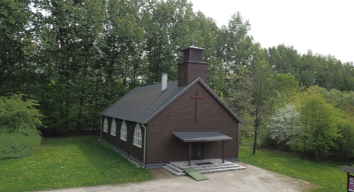

Dokumentacja z inwentaryzacji kościoła wyznania ewangelicko-augsburskiego z Bytomia Bobrku
1. Fotografie wykonane przy użyciu smartphonów oraz drona

2. Wykonanie fotogrametrii w programie ReCap Photo
3. Przeprowadzenie badań akustycznych. Analiza wyników
4. Rysunki rzutów poziomych pomieszczeń kościoła
5. Rysunki przekrójów pionowych pomieszczeń kościoła
6. Rysunki elewacji kościoła
7. Zestawienie stolarki drzwiowej
8. Zestawienie stolarki okiennej
9. Wykonanie modelu 3D
10. Wykonanie dokumentacji porównaczej.
Porównanie stanu przed i po przeniesieniu na skansen
11. Wykonanie opisu technicznego
12. Wykonanie opisu historii obiektu
13. Wykonanie osi czasu kościoła
14. Wykonanie pomiarów wilgotności